Git 使用分享
从版本控制说起
版本控制最主要的功能就是追踪文件的变更。它将什么时候、什么人更改了文件的什么内容等信息忠实地了已录下来。每一次文件的改变，文件的版本号都将增加。除了记录版本变更外，版本控制的另一个重要功能是并行开发。软件开发往往是多人协同作业，版本控制可以有效地解决版本的同步以及不同开发者之间的开发通信问题，提高协同开发的效率。并行开发中最常见的不同版本软件的错误(Bug)修正问题也可以通过版本控制中分支与合并的方法有效地解决。
版本控制包括：检入检出控制、分支和合并、历史记录。
- 检入检出控制：开发人员能够从库中取出对应项目的配置项进行修改，并检入到软件配置库中，对版本进行“升级”；配置管理人员可以确定多余配置项并删除。同步控制的实质是版本的检入检出控制。检入就是把软件配置项从用户的工作环境存入到软件配置库的过程，检出就是把软件配置项从软件配置库中取出的过程。检人是检出的逆过程。同步控制可用来确保由不同的人并发执行的修改不会产生混乱。
- 分支和合并：版本分支(以一个已有分支的特定版本为起点，但是独立发展的版本序列)的人工方法就是从主版本——称为主干上拷贝一份，并做上标记。在实行了版本控制后，版本的分支也是一份拷贝，这时的拷贝过程和标记动作由版本控制系统完成。版本合并(来自不同分支的两个版本合并为其中一个分支的新版本)有两种途径，一是将版本A的内容附加到版本B中；另一种是合并版本A和版本B的内容，形成新的版本C。
- 历史记录：版本的历史记录有助于对软件配置项进行审核，有助于追踪问题的来源。历史记录包括版本号、版本修改时间、版本修改者、版本修改描述等最基本的内容，还可以有其他一些辅助性内容，比如版本的文件大小和读写属性。
集中式VS分布式
集中式
集中式版本控制系统，版本库是集中存放在中央服务器的，而在开发的时候，先要从中央服务器取得最新的版本，然后开始开发，开发完成后，再把自己的改动推送给中央服务器。
中央服务器就好比是一个图书馆，你要改一本书，必须先从图书馆借出来，然后回到家自己改，改完了，再放回图书馆。集中式版本控制系统最大的毛病就是必须联网才能工作，如果在局域网内还好，带宽够大，速度够快，可如果在互联网上，遇到网速慢的话，可能提交一个10M的文件就需要5分钟。
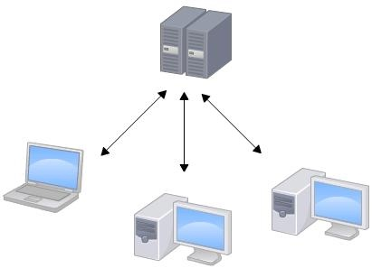
分布式
分布式版本控制系统根本没有类似中央服务器的概念，每个人的电脑上都是一个完整的版本库。这样，你工作的时候，就不需要联网了，因为版本库就在你自己的电脑上。既然每个人电脑上都有一个完整的版本库，
那多个人如何协作呢？比方说你在自己电脑上改了文件A，你的同事也在他的电脑上改了文件A，这时，你们俩之间只需把各自的修改推送给对方，就可以互相看到对方的修改了。和集中式版本控制系统相比，分布式版本控制系统的安全性要高很多，因为每个人电脑里都有完整的版本库，某一个人的电脑坏掉了不要紧，随便从其他人那里复制一个就可以了。而集中式版本控制系统的中央服务器要是出了问题，所有人都会没法开发。
在实际使用分布式版本控制系统的时候，其实很少在两人之间的电脑上推送版本库的修改，因为可能你们俩不在一个局域网内，两台电脑互相访问不了，也可能今天你的同事病了，他的电脑压根没有开机。因此，分布式版本控制系统通常也有一台充当中央服务器的电脑，但这个服务器的作用仅仅是用来方便交换和同步大家的修改，没有它大家也一样可以开发，只是同步修改不方便而已。
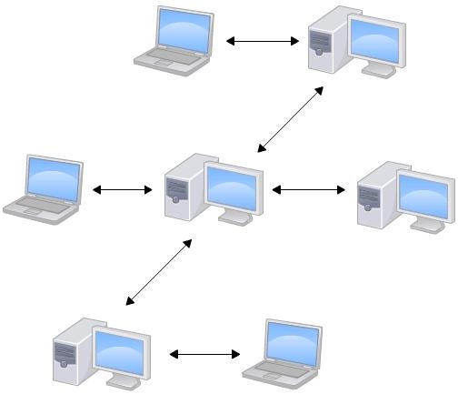
Git简史
Linux 内核开源项目有着为数众广的参与者。 绝大多数的 Linux 内核维护工作都花在了提交补丁和保存归档的繁琐事务上（1991－2002年间）。到2002年，整个项目组开始启用一个专有的分布式版本控制系统 BitKeeper 来管理和维护代码。
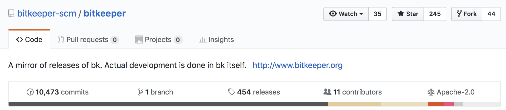
（BitKeeper 是开源在 Git 上的。。。）
到了2005年，开发 BitKeeper 的商业公司同 Linux 内核开源社区的合作关系结束，他们收回了 Linux 内核社区免费使用 BitKeeper 的权力。 这就迫使 Linux 开源社区（特别是 Linux 的缔造者 Linus Torvalds）基于使用 BitKeeper 时的经验教训，开发出自己的版本系统———Git.他们对新的系统制订了若干目标：
- 速度
- 简单的设计
- 对非线性开发模式的强力支持（允许成千上万个并行开发的分支）
- 完全分布式
- 有能力高效管理类似 Linux 内核一样的超大规模项目（速度和数据量）
Git原理
直接记录快照，而非差异比较
Git 和其它版本控制系统（包括 Subversion 和近似工具）的主要差别在于 Git 对待数据的方法。 概念上来区分，其它大部分系统以文件变更列表的方式存储信息。 这类系统（CVS、Subversion、Perforce、Bazaar 等等）将它们保存的信息看作是一组基本文件和每个文件随时间逐步累积的差异。
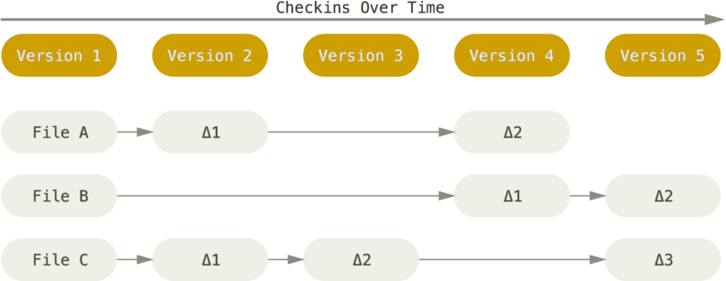
Git 不按照以上方式对待或保存数据。 反之，Git 更像是把数据看作是对小型文件系统的一组快照。 每次你提交更新，或在 Git 中保存项目状态时，它主要对当时的全部文件制作一个快照并保存这个快照的索引。 为了高效，如果文件没有修改，Git 不再重新存储该文件，而是只保留一个链接指向之前存储的文件。 Git 对待数据更像是一个 快照流。
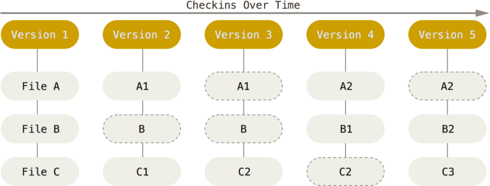
近乎所有操作都是本地执行
在 Git 中的绝大多数操作都只需要访问本地文件和资源，一般不需要来自网络上其它计算机的信息。因为你在本地磁盘上就有项目的完整历史，所以大部分操作看起来瞬间完成。
例如，要浏览项目的历史，Git 不需外连到服务器去获取历史，然后再显示出来——它只需直接从本地数据库中读取。 你能立即看到项目历史。
Git 保证完整性
Git 中所有数据在存储前都计算校验和，然后以校验和来引用。 这意味着不可能在 Git 不知情时更改任何文件内容或目录内容。
Git使用了SHA-1并非是为了安全性，而是为了数据的完整性；它可以保证，在很多年后，你重新checkout某个commit时，一定是它多年前的当时的状态，完全一摸一样，完全值得信任。
Git 用以计算校验和的机制叫做 SHA-1 散列（hash，哈希）。 这是一个由 40 个十六进制字符（0-9 和 a-f）组成字符串，基于 Git 中文件的内容或目录结构计算出来。 SHA-1 哈希看起来是这样：
24b9da6552252987aa493b52f8696cd6d3b00373
实际上，Git 数据库中保存的信息都是以文件内容的哈希值来索引，而不是文件名。
三种状态
Git 有三种状态，你的文件可能处于其中之一：已提交（committed）、已修改（modified）和已暂存（staged）。 已提交表示数据已经安全的保存在本地数据库中。 已修改表示修改了文件，但还没保存到数据库中。 已暂存表示对一个已修改文件的当前版本做了标记，使之包含在下次提交的快照中。
这里涉及到Git 项目的三个工作区域的概念：Git 仓库、工作目录以及暂存区域。
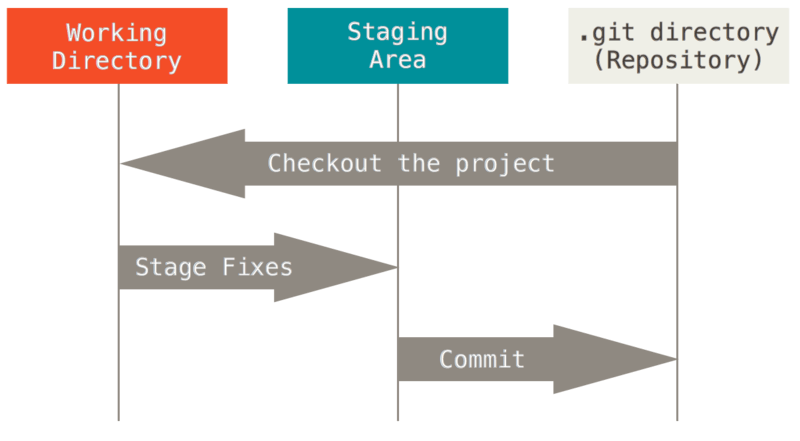
Git 仓库目录是 Git 用来保存项目的元数据和对象数据库的地方。 这是 Git 中最重要的部分，从其它计算机克隆仓库时，拷贝的就是这里的数据。
工作目录是对项目的某个版本独立提取出来的内容。 这些从 Git 仓库的压缩数据库中提取出来的文件，放在磁盘上供你使用或修改。
暂存区域是一个文件，保存了下次将提交的文件列表信息，一般在 Git 仓库目录中。 有时候也被称作`‘索引’’，不过一般说法还是叫暂存区域。
Git的数据流
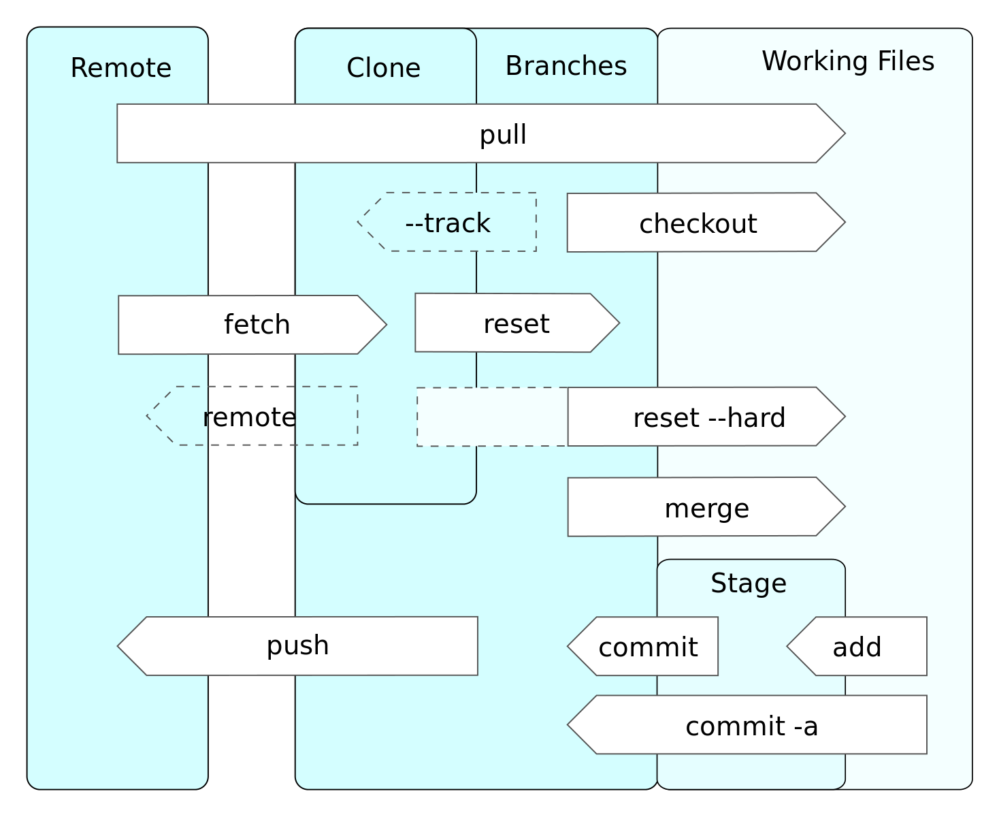
Git工作流
Feature 分支的工作流
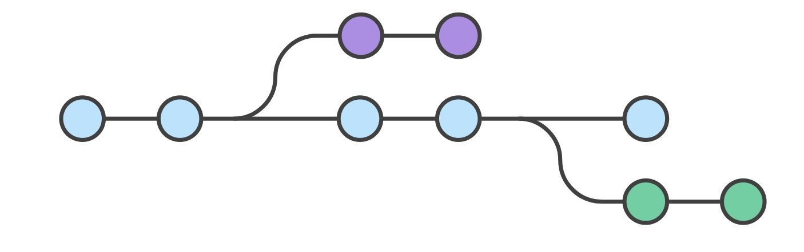
这种封装使得多个开发者专注自己的功能而不会打扰主代码库。它还保证 master 分支永远不会包含损坏的代码，给持续集成环境带来了是很大的好处。
封装功能的开发使得 Pull Request 的使用成为可能，用来启动围绕一个分支的讨论。它给了其他开发者在功能并入主项目之前参与决策的机会。或者，如果你开发功能时卡在一半，你可以发起一个 Pull Request，向同事寻求建议。重点是，Pull Request 使得你的团队在评论其他人的工作时变得非常简单。
GitFlow 工作流
GitFlow 工作流围绕项目发布定义了一个严格的分支模型。有些地方比功能分支工作流更复杂，为管理大型项目提供了可控的框架。
和功能分支工作流相比，这种工作流没有增加任何新的概念或命令。它给不同的分支指定了特定的角色，定义它们应该如何、什么时候交流。除了功能分支之外，它还为准备发布、维护发布、记录发布分别使用了单独的分支。当然，你还能享受到功能分支工作流带来的所有好处：Pull Request、隔离实验和更高效的协作。
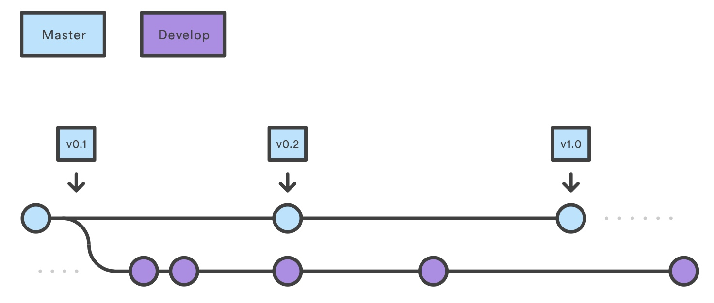
和单独的 master 分支不同，这种工作流使用两个分支来记录项目历史。master 分支储存官方发布历史，develop 分支用来整合功能分支。同时，这还方便了在 master 分支上给所有提交打上版本号标签。
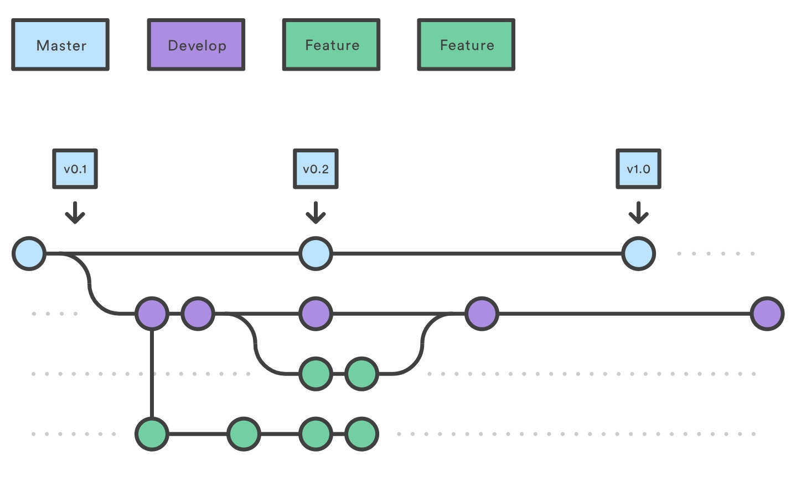
每个新功能都放置在自己的分支中，可以在备份/协作时推送到中央仓库。但是，与其合并到 master，功能分支将开发分支作为父分支。当一个功能完成时，它将被合并回 develop。功能永远不应该直接在 master 上交互
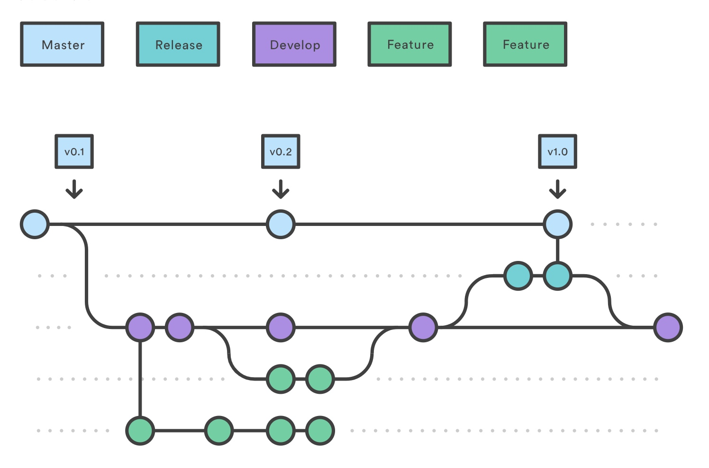
一旦 develop分支的新功能足够发布（或者预先确定的发布日期即将到来），你可以从 develop 分支 fork 一个发布分支。这个分支的创建开始了下个发布周期，只有和发布相关的任务应该在这个分支进行，如修复 bug、生成文档等。一旦准备好了发布，发布分支将合并进 master，打上版本号的标签。另外，它也应该合并回 develop，后者可能在发布启动之后有了新的进展。
使用一个专门的分支来准备发布确保一个团队完善当前的发布，其他团队可以继续开发下一个发布的功能。它还建立了清晰的开发阶段（比如说，「这周我们准备 4.0 版本的发布」，而我们在仓库的结构中也能看到这个阶段）。
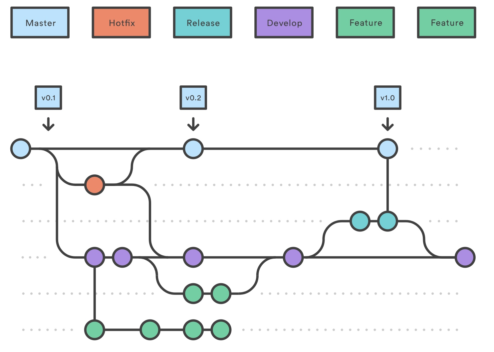
维护或者「紧急修复」分支用来快速给产品的发布打上补丁。这是唯一可以从 master 上 fork 的分支。一旦修复完成了，它应该被并入 master 和 develop 分支（或者当前的发布分支），master 应该打上更新的版本号的标签。
有一个专门的 bug 修复开发线使得你的团队能够处理 issues，而不打断其他工作流或是要等到下一个发布周期。你可以将维护分支看作在 master 分支上工作的临时发布分支。
Fork 工作流
Fork 工作流并没有唯一的服务端仓库作为「中央」代码库，它给予每个开发者一个服务端仓库。也就是说每个贡献者都有两个 Git 仓库，而不是一个：一个私有的本地仓库和一个公开的服务端仓库。
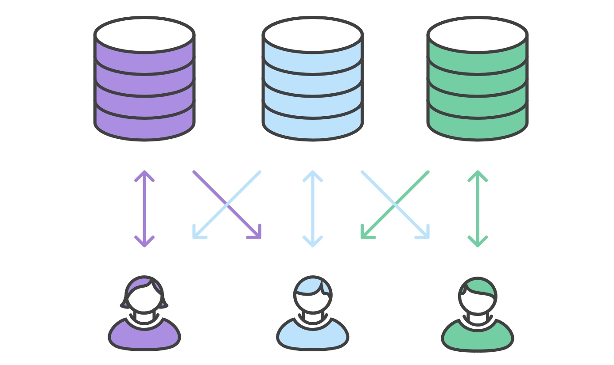
Fork 工作流的主要优点在于贡献可以轻易地整合进项目，而不需要每个人都推送到单一的中央仓库。开发者推送到他们 自己的 服务端仓库，只有项目管理者可以推送到官方仓库。这使得管理者可以接受任何开发者的提交，却不需要给他们中央仓库的权限。
这种分布式的工作流为大型、组织性强的团队（包括不可信的第三方）提供了安全的协作方式。它同时也是开源项目理想的工作流。例如GitHub.
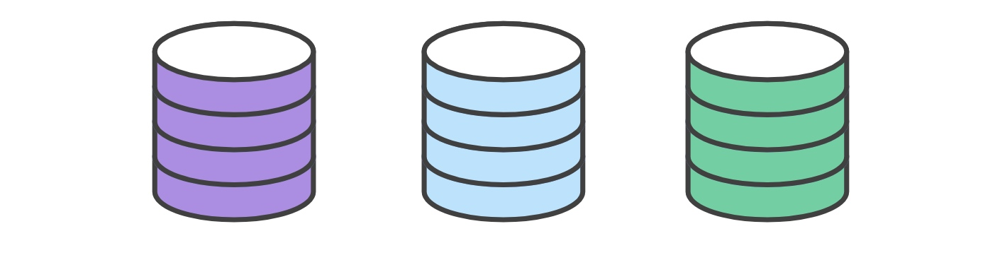
开发者们fork官方仓库。
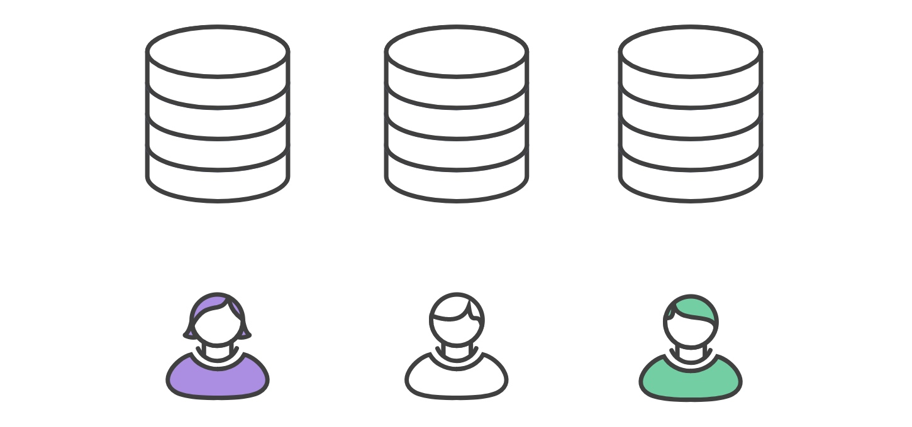
在他们刚克隆的本地仓库中，开发者可以编辑代码、提交更改。
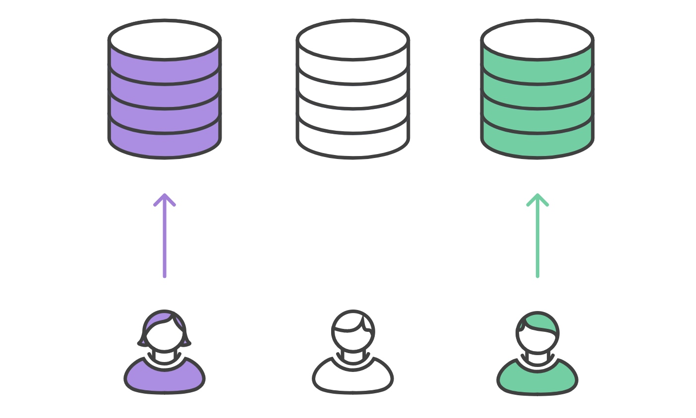
一旦开发者准备好共享他们的新功能，他们需要做两件事情。第一，他们必须将贡献的代码推送到自己的公开仓库，让其他开发者能够访问到。第二，他们需要通知项目维护者，他们想要将功能并入官方代码库。也就是我们说的提 PR .
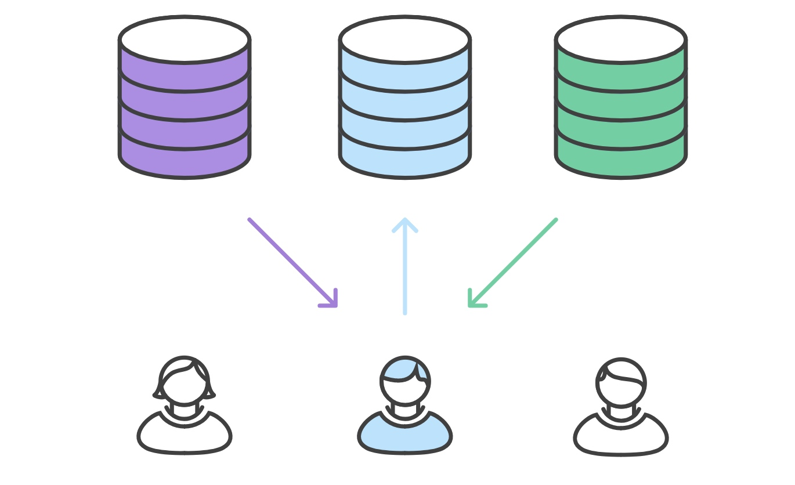
项目维护者整合他们的功能，接受或者拒绝 PR .
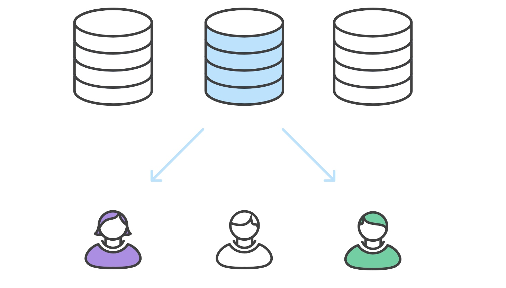
开发者和中央仓库保持同步。
Git小技巧
Git 别名配置
git config --globalalias.st status设置git为大小写敏感
git config --globalcore.ignorecasefalse保存当前追踪的文件修改状态而不提交，并使得工作空间恢复干净
git stash使用
nrm切换仓库地址https://github.com/Pana/nrm移除所有在远端已经被删除的远程分支
git fetch -p恢复某个文件到某个Commit时候的状态
git checkout <commit-ish> -- <file_path>修改上一个提交的信息
git commit -v --amend修改所有提交的作者、邮箱信息
1
2
3
4
5
6
7
8
9
10
11
12
13
14
15
16
17
18
19
20
21
22
23
24
25
26
27
28
29
30git filter-branch --commit-filter '
if [ "$GIT_AUTHOR_EMAIL" = "schacon@localhost" ];
then
GIT_AUTHOR_NAME="Scott Chacon";
GIT_AUTHOR_EMAIL="schacon@example.com";
git commit-tree "$@";
else
git commit-tree "$@";
fi' HEAD
```
9. 修改多个提交说明
``` shell
git rebase -i HEAD~3
pick f7f3f6d changed my name a bit
pick 310154e updated README formatting and added blame
pick a5f4a0d added cat-file
Rebase 710f0f8..a5f4a0d onto 710f0f8
Commands:
p, pick = use commit
e, edit = use commit, but stop for amending
s, squash = use commit, but meld into previous commit
If you remove a line here THAT COMMIT WILL BE LOST.
However, if you remove everything, the rebase will be aborted.快速切换到上一个分支
git checkout -修改当前分支名
git branch -m <new-branch-name>在Pull时候强制用变基进行操作
git config --global branch.autosetuprebase always同时在多个分支上开发
1
2
3
4
5
6
7git worktree add ../new-feature-or-bug-fix
git worktree list
rm -rf new-feature-or-bug-fix
git worktree prune